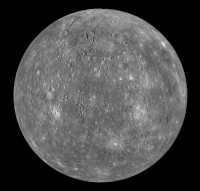
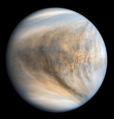
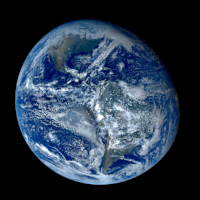
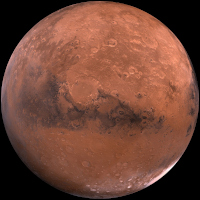
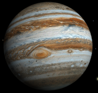
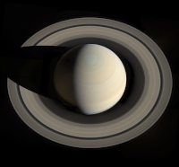
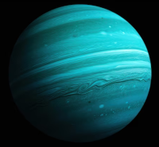
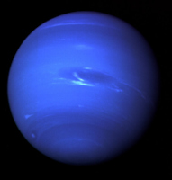

- Massa(1024kg): 0,33
- Rotação(Dia): 58,6 dias
- Velocidade Orbital: 47,4 km/s
- Inclinação Eixo: 0,03°
- Gravidade: 3,7 m/s²
- Temperatura Média: 167°C
O Sistema Solar é composto por oito planetas principais que orbitam o Sol, dividindo em dois grupos distintos: os rochosos (Mercúrio, Vênus, Terra e Marte), que são menores, densos e internos, e os gigantes gasosos ou jovianos (Júpter, Saturno, Urano e Netuno), caracterizados por suas grandes dimensões, atmosferas densas e presença de anéis.

Mercúrio é o menor planeta do Sistema Solar e o mais próximo do Sol, completando uma órbita inteira em apenas 88 dias. Por não possuir uma atmosfera espessa para reter o calor, ele apresenta variações térmicas extremas: durante o dia, as temperaturas podem chegar a 430°C, enquanto à noite despencam para -180°C. Sua superfície é rochosa e repleta de crateras, guardando uma aparência muito semelhante à da nossa Lua devido aos constantes impactos de meteoros ao longo de bilhões de anos.
Diferente de planetas descobertos por telescópios modernos, Mercúrio é conhecido pela humanidade desde a Antiguidade, por ser visível a olho nu. Os sumérios já o registravam há cerca de 5.000 anos, mas foram os romanos que o batizaram em homenagem ao seu deus mensageiro, devido à rapidez com que o planeta se desloca no céu. As primeiras observações detalhadas através de telescópios só ocorreram no século XVII, lideradas por astrônomos como Galileu Galilei.

Vênus é frequentemente chamado de "planeta irmão" da Terra devido ao tamanho e composição semelhantes, mas as semelhanças param por aí. Ele possui a atmosfera mais densa do Sistema Solar, composta principalmente de dióxido de carbono, o que gera um efeito estufa desenfreado. Isso faz de Vênus o planeta mais quente do nosso sistema, com temperaturas constantes na casa dos 460°C, calor suficiente para derreter chumbo, independentemente de ser dia ou noite.
Assim como Mercúrio, Vênus é visível a olho nu e conhecido desde a Antiguidade por diversas culturas, como os maias e os gregos. Por ser o objeto mais brilhante no céu após o Sol e a Lua, recebeu o nome da deusa romana do amor e da beleza. As primeiras observações telescópicas foram feitas por Galileu Galilei em 1610, que descobriu que o planeta apresenta fases (como a Lua), fornecendo uma das provas cruciais de que os planetas orbitam o Sol e não a Terra.
- Massa(1024kg): 4,87
- Rotação(Dia): 243 dias
- Velocidade Orbital: 35,0 km/s
- Inclinação Eixo: 177,4°
- Gravidade: 8,9 m/s²
- Temperatura Média: 464°C

A Terra é o único lugar conhecido no universo que abriga vida, distinguindo-se por sua vasta presença de água líquida, que cobre cerca de 71% de sua superfície. Com uma atmosfera rica em nitrogênio e oxigênio, o planeta mantém uma temperatura média equilibrada de 15°C, protegendo-nos da radiação solar e permitindo a existência de ecossistemas complexos e diversos.
Diferente dos outros planetas, a Terra não foi "descoberta", pois é a nossa casa desde as origens da humanidade. No entanto, a compreensão de que vivemos em um globo que orbita o Sol levou milênios para se consolidar. Filósofos gregos como Pitágoras e Aristóteles já defendiam a esfericidade da Terra na Antiguidade, e Eratóstenes chegou a calcular sua circunferência com precisão impressionante há mais de 2.000 anos. A confirmação definitiva de sua forma e movimento veio com a Revolução Copérnico-Galileana e, séculos depois, com as primeiras fotos tiradas do espaço.
- Massa(1024kg): 5,97
- Rotação(Dia): 23,9 horas
- Velocidade Orbital: 29,8 km/s
- Inclinação Eixo: 23,4°
- Gravidade: 9,8 m/s°
- Temperatura Média: 15°C

Marte, conhecido como o "Planeta Vermelho", deve sua cor característica à abundância de óxido de ferro (ferrugem) em sua superfície. É um mundo desértico e gelado, com uma atmosfera muito fina composta principalmente de dióxido de carbono. Apesar de ter apenas cerca de metade do tamanho da Terra, abriga formações geológicas impressionantes, como o Monte Olimpo, o maior vulcão do Sistema Solar, e o Valles Marineris, um sistema de cânions que faria o Grand Canyon parecer pequeno.
Assim como os planetas anteriores, Marte é visível a olho nu e é conhecido desde a Antiguidade por civilizações como os egípcios, babilônios e gregos. Seu nome atual vem do deus romano da guerra, escolhido por causa de sua tonalidade avermelhada que lembra o sangue. As primeiras observações detalhadas por telescópio foram feitas por Galileu Galilei em 1610, mas foi apenas com as missões espaciais modernas, começando pela Mariner 4 em 1965, que conseguimos imagens próximas e reais de sua superfície.
- Massa(1024kg): 0,64
- Rotação(Dia): 24,6 horas
- Velocidade Orbital: 24,1 km/s
- Inclinação Eixo: 25,2°
- Gravidade: 3,7 m/s°
- Temperatura Média: -65°C

Júpiter é o verdadeiro gigante do nosso sistema, possuindo mais que o dobro da massa de todos os outros planetas somados. Como o primeiro dos gigantes gasosos, ele não tem uma superfície sólida; é composto majoritariamente de hidrogênio e hélio. Sua característica mais icônica é a Grande Mancha Vermelha, uma tempestade colossal maior que a própria Terra que ruge há centenas de anos. Além disso, Júpiter funciona como um "aspirador de pó" cósmico, sua gravidade intensa atrai e desvia muitos cometas e asteroides que poderiam atingir os planetas internos.
Por ser um dos objetos mais brilhantes no céu noturno, Júpiter é conhecido desde a Antiguidade e recebeu o nome do rei dos deuses romanos. No entanto, a verdadeira revolução no nosso entendimento sobre ele aconteceu em 1610, quando Galileu Galilei apontou seu telescópio e descobriu suas quatro maiores luas: Io, Europa, Ganimedes e Calisto. Essa descoberta foi histórica, pois provou pela primeira vez que nem tudo no universo girava em torno da Terra.
- Massa(1024kg): 1.898,0
- Rotação(Dia): 9,9 horas
- Velocidade Orbital: 13,1 km/s
- Inclinação Eixo: 3,1°
- Gravidade: 24,8 m/s°
- Temperatura Média: -110°C

Saturno é o segundo maior planeta do Sistema Solar e o mais famoso por seu espetacular sistema de anéis, composto por bilhões de pedaços de gelo e rocha que variam de grãos de poeira a montanhas. Assim como Júpiter, é um gigante gasoso feito principalmente de hidrogênio e hélio, mas com uma densidade tão baixa que, se houvesse um oceano grande o suficiente, Saturno flutuaria na água. Seus ventos na alta atmosfera podem atingir incríveis 1.800 km/h, tornando-o um dos lugares mais ventosos do sistema.
Conhecido desde a Antiguidade por ser visível a olho nu, Saturno recebeu o nome do deus romano do tempo (pai de Júpiter). Em 1610, Galileu Galilei foi o primeiro a vê-lo através de um telescópio, mas ficou confuso com sua aparência, descrevendo o planeta como tendo "orelhas" ou sendo um corpo triplo. Foi apenas em 1655 que o astrônomo holandês Christiaan Huygens propôs que Saturno estava, na verdade, cercado por um anel plano e fino. Pouco depois, Giovanni Cassini descobriu a maior divisão entre esses anéis, que hoje leva seu nome.
- Massa(1024kg): 568,0
- Rotação(Dia): 10,7 horas
- Velocidade Orbital:9,7 km/s
- Inclinação Eixo: 26,7°
- Gravidade: 10,4 m/s°
- Temperatura Média: -140°C

Urano é o primeiro dos gigantes gelados e se destaca por uma característica única: ele gira "deitado". Enquanto os outros planetas giram como piões, Urano tem uma inclinação axial de quase 98 graus, o que significa que ele orbita o Sol rolando de lado. Composto principalmente de gelo de água, metano e amônia, sua cor azul-esverdeada pálida vem do gás metano em sua atmosfera, que absorve a luz vermelha e reflete o azul.
Diferente de todos os anteriores, Urano não era conhecido na Antiguidade. Ele foi o primeiro planeta a ser descoberto com o auxílio de um telescópio, em 13 de março de 1781, pelo astrônomo britânico William Herschel. Inicialmente, Herschel pensou ter encontrado um cometa, mas observações posteriores confirmaram que se tratava de um novo mundo. O nome foi uma sugestão de Johann Bode, em homenagem ao deus grego do céu (pai de Cronos/Saturno), mantendo a tradição mitológica.
- Massa(1024kg): 86,8
- Rotação(Dia): 17,2 horas
- Velocidade Orbital: 6,8 km/s
- Inclinação Eixo: 97,8°
- Gravidade: 8,7 m/s°
- Temperatura Média: -195°C

Netuno é o último dos grandes planetas do Sistema Solar e o segundo gigante gelado. Sua cor azul vibrante é resultado do metano em sua atmosfera, que absorve a luz vermelha de forma ainda mais intensa que em Urano. É um mundo de ventos supersônicos, os mais rápidos do sistema, atingindo incríveis 2.100 km/h. Localizado a cerca de 4,5 bilhões de quilômetros do Sol, Netuno é tão distante que leva quase 165 anos terrestres para completar uma única órbita.
Diferente de todos os outros planetas, Netuno não foi encontrado por observação direta, mas sim por cálculos matemáticos. Em 1846, o matemático francês Urbain Le Verrier e o britânico John Couch Adams notaram irregularidades na órbita de Urano que sugeriam a presença de outro corpo celeste. Com base nas coordenadas de Le Verrier, o astrônomo alemão Johann Gottfried Galle apontou seu telescópio e localizou o planeta em apenas uma noite. O nome homenageia o deus romano dos mares, devido à sua cor oceânica.
- Massa(1024kg): 102,0
- Rotação(Dia): 16,1 horas
- Velocidade Orbital: 5,4 km/s
- Inclinação Eixo: 28,3°
- Gravidade: 11,1 m/s°
- Temperatura Média: -200°C